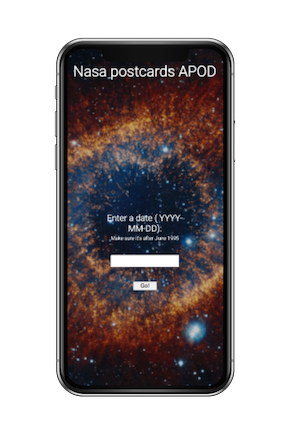

NASA APOD POSTCARDS
NASA APOD POSTCARDS provides a thoughtful and meaninful, yet quick present/thinking-of-you message. Type in the day of your anniversery, birthday, or any memorable day and a gorgeous picture of the stars or space will appear. Check out a few Nasa apod dates yourself. Stack: Nasa API
Check out the github repo here.